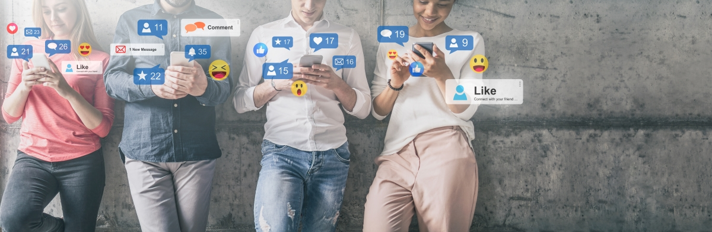

aiMarketAnalytics.com is a team of software developers and business consulters. We are B2B startup. Our product is a triangle of Social Media Monitoring (SMM), Knowledge Management (KM) and People Relation Management (PRM) systems.
The core of the system is a knowledge management system and proprietary NLP ML algorithms. It allows us to accurately recognize the sense and emotional temperature of the text on websites and social networks and communicate with the system in a language close to humans.
The Knowledge Management System describes the domain area. It is a set of conceptions, relations and a dictionary of terms. Products, categories and properties are parts of this description.
Social media monitoring is scanners that analyze text data from external sources like websites or social networks. It's a permanent incoming flow of data from markets which requires study, investigation or urgent reaction.
CRM is traditionally responsible for the loyalty of the external customer, increasing sales, and profitability; improving customer service. But what about our internal customers? What about our staff which is a pillar of a business? A clear understanding of official duties; responsibilities, performance and loyalty measurements is crucial for any business. Suppliers affect the business too. That's why we call it People Relation Management.
We are a startup with ambitious plans. The technology we are working on will lead the industry to new standards. We are going to present the public beta on Q4 2023.